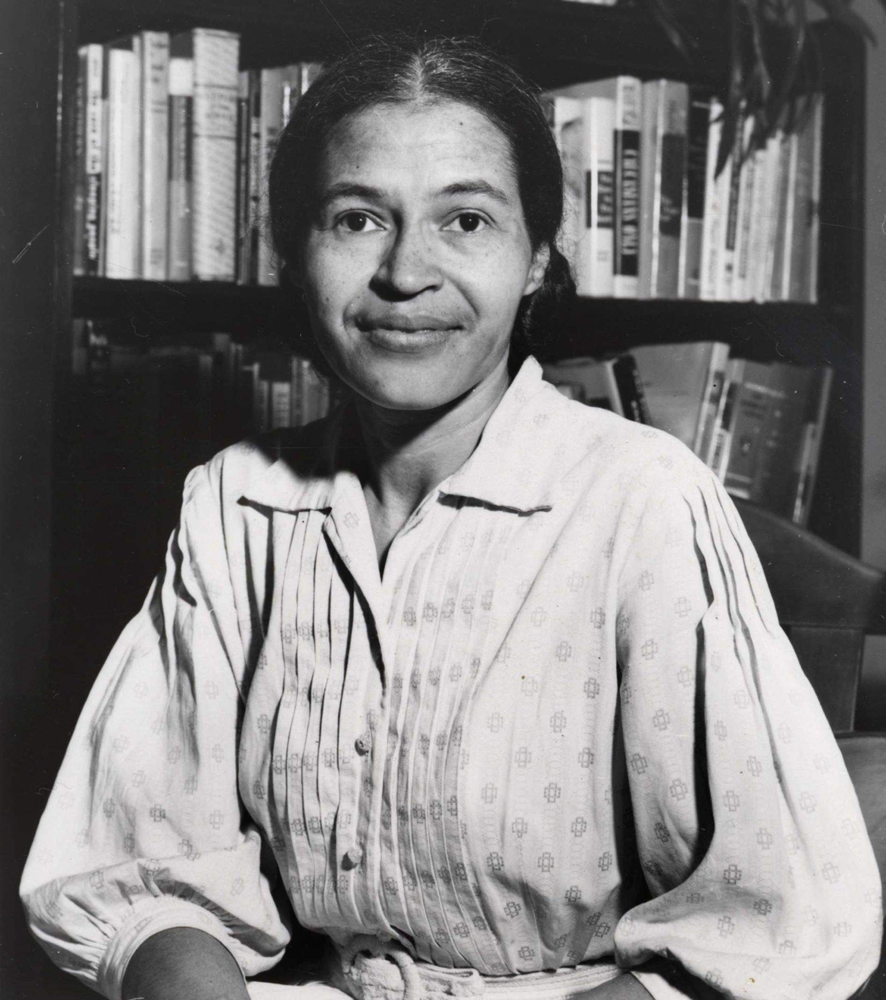

Rosa Parks

The first lady of civil rights.
Rosa Louise McCauley Parks (February 4, 1913 – October 24, 2005) was an American activist in the civil rights movement best known for her pivotal role in the Montgomery bus boycott. The United States Congress has called her "the first lady of civil rights" and "the mother of the freedom movement".